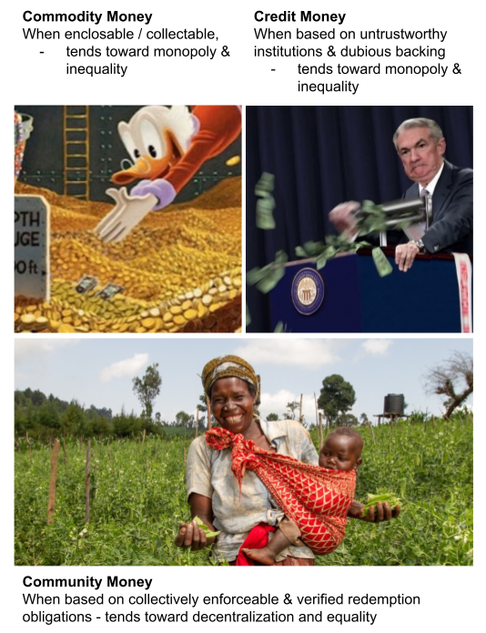

The Emperor Has No Clothes
We shift back and forth as a society trying to decide who we can trust to issue currency, like children caught between quarreling parents.
One parent tells us that only commodities - things that can be owned and collected and made scarce are to be used safely as money. The proponents of this view have ranged from the kings of old, sitting on thrones bought with gold from their mines - to the Bitcoin whales of today basting on yachts bought with scarce tokens from their digital miners. Anyone that happens to have such a commodity money - simply wants other people to think it is valuable and before long, even if initially well distributed and well intentioned, it becomes monopolized.
The parent says tell us to trust only them - i.e. governments and banking cartels - who issue more and more credit all the time against what ... it's hard to say and no one holds them accountable. The rapidly rising amounts of credit in the form of national currency in the hands of the few, without a corresponding increase in productivity has worried people enough yell "The Emperor has no clothes!" and for some to revert back to commodity money - in the form of scarce-by-design systems like Bitcoin and Ethereum. Sadly, these tokens like all commodity monies tend toward monopoly even with best intentions at heart. The emperors and whales holding vast amounts of these tokens, again sit on thrones, while inequality runs rampant. All such emperors, high on power, are actually wearing no clothes in the end - as we can't live in a society of rising inequality for long nor can our ecosystems deal with the fallout.
What if there was a middle path toward salvaging credit money from the ruin of politicians and downright bad actors without creating commodity emperors and whales? What if there was a way to decentralize the issuance of credit money and to validate its worth, trade histories and claims against redemption?
There is! It's called by many names and dates back to the origins of money itself: Mutual Credit, Community Currency, Flying Money, Community Money, Credit Clearing houses/unions, Barter credits, Producer Credit and recently Community Inclusion Currency as implemented by Grassroots Economics and the other Humanitarian organizations.
Businesses, municipalities and communities can and are issuing their own credit backed by obligations for redemption in defined goods and services. These credits are internally regulated and taxed to work in coordination with national governments. All this can be done transparently on distributed ledger technology - which is secure from attacks and fraud. Gesell taxes on these credits ensure there is no advantage to hoarding/collecting them and the tax can be redistributed as basic income, social services and so on. Finally these credit systems are linked together through liquidity pools and balanced baskets of such credits form stable reserves / network tokens.
We have the technology and will to create truly decentralized credit systems based on trust in real goods and services. Together we need to grow up and collectively point at our parents, emperors, whales and politicians to end the monopolies on media of exchange and establish economic liberty as a human right. We must humbly learn from and build on these concepts as they have been implemented in communities around the world for generations. Tap into our own abundance!